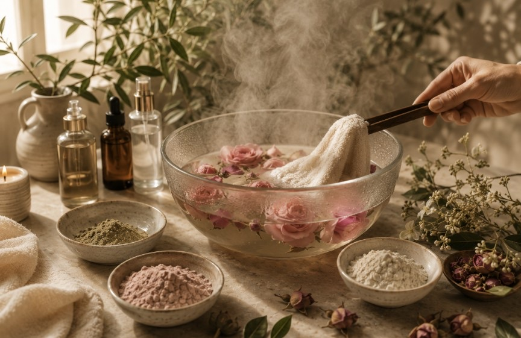
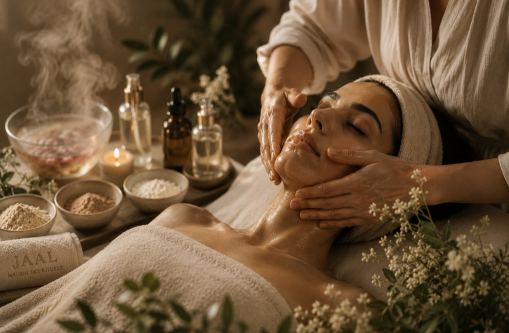
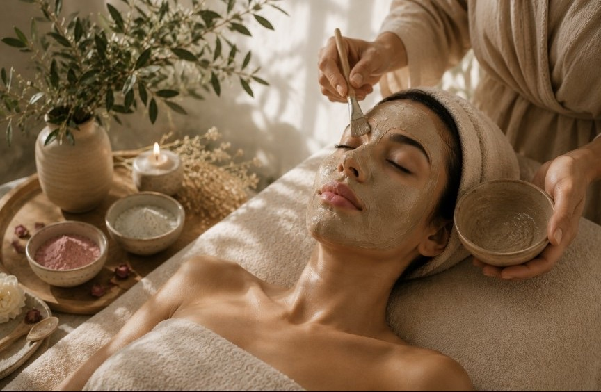
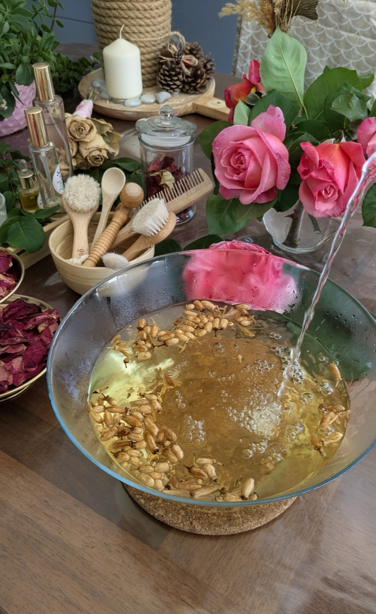
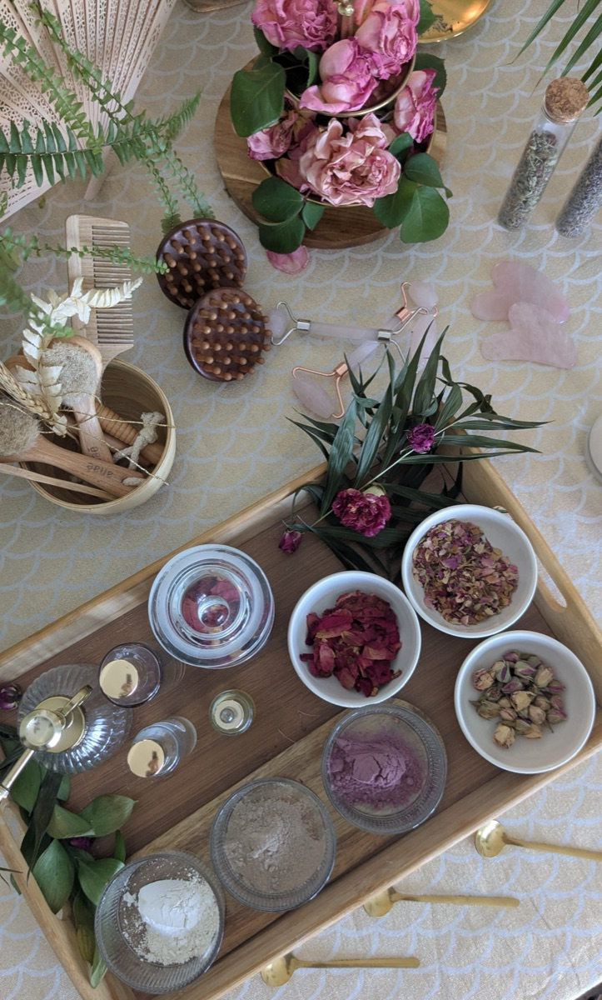
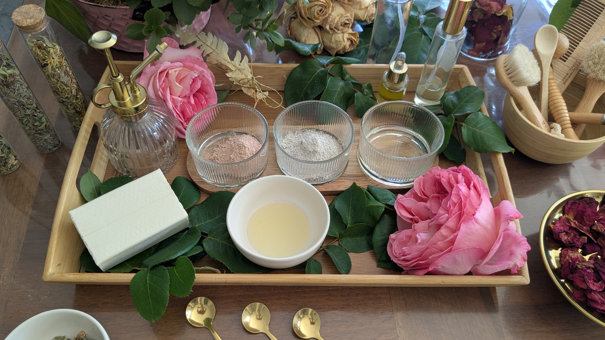
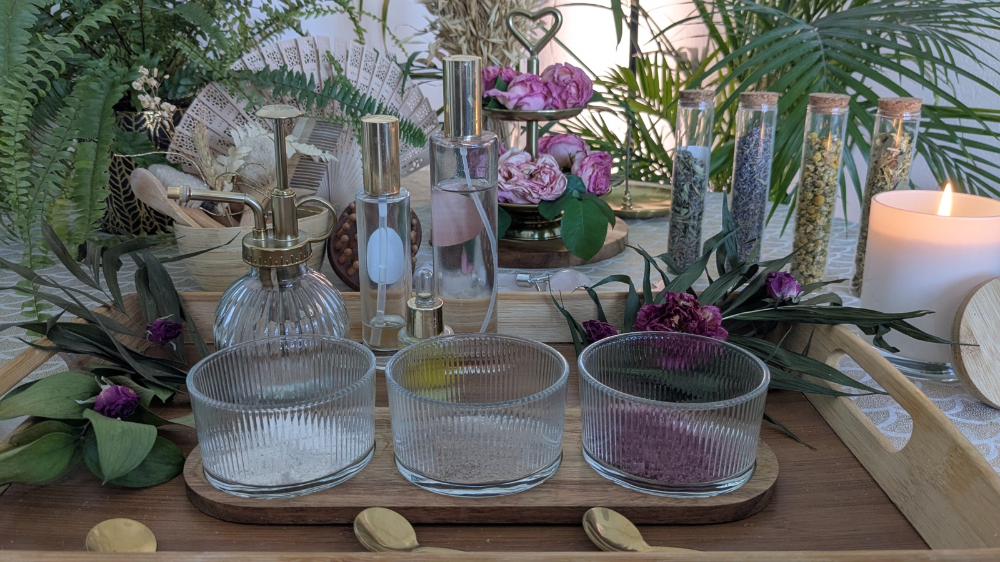

01
Nettoyage & vapeur
Le rituel débute par un nettoyage délicat du visage, suivi de serviettes chaudes infusées aux plantes qui enveloppent les sens dans une profonde sensation d'apaisement.
Maison de rituels beauté
Inspiré des traditions ancestrales du Maroc, le rituel JAAL enveloppe le visage de gestes lents, de chaleur et de matières précieuses — pour retrouver, en une heure quarante-cinq, l'équilibre du corps et de la peau.
Sur rendez-vous, à domicile — Haute-Savoie · Genève · Savoie · Isère

L'univers JAAL
JAAL n'est pas un simple soin du visage. C'est un rituel dédié à la peau, au bien-être profond et au ralentissement — comme lorsque l'on pousse la porte d'un spa d'exception, où le bruit du monde s'efface enfin et où l'on peut, enfin, respirer.
Notre inspiration puise dans les traditions ancestrales de beauté du Maroc, portée par l'élégance sobre des plus beaux spas contemporains. Rhassoul, argile blanche, poudre de rose, huile d'argan et huile précieuse de pépins de figue de barbarie sont utilisés comme de véritables trésors de la nature — avec un seul mot d'ordre : respecter la peau, jamais l'agresser.
Chaque geste est précis, enveloppant, pensé comme un véritable voyage sensoriel.
Huiles végétales, eaux florales, poudres de plantes — brutes, naturelles et bio.
Chaleur, textures, parfums, lumière douce et silence pour une parenthèse complète.
Le rituel beauté JAAL
Bien plus qu'un soin du visage : un instant pour se déposer, ralentir et revenir à soi.

Le rituel débute par un nettoyage délicat du visage, suivi de serviettes chaudes infusées aux plantes qui enveloppent les sens dans une profonde sensation d'apaisement.

Un gommage doux prépare la peau, puis un masque inspiré des traditions ancestrales — poudre de rose, rhassoul et argile blanche — vient révéler l'éclat naturel de la peau.

Les eaux florales de rose et de fleur d'oranger, l'huile d'argan et l'huile précieuse de pépins de figue de barbarie accompagnent chaque geste, pour une expérience profondément sensorielle et réconfortante.
Pour terminer, un massage du visage puis du cuir chevelu vient relâcher les tensions, calmer le système nerveux et offrir cette sensation rare d'être pleinement enveloppée, apaisée et reconnectée à sa beauté naturelle.
Trésors de la nature
Huiles végétales précieuses, eaux florales, poudres de plantes, rhassoul et argile blanche : chaque ingrédient est brut et bio, sélectionné avec l'exigence d'un rituel transmis avec soin.



Notre philosophie
Au fil de son expérience d'esthéticienne, Julie a compris qu'une belle peau ne dépend pas uniquement d'une routine de soins, d'une alimentation équilibrée ou d'une bonne hygiène de vie. Ces éléments comptent, mais ils ne racontent qu'une partie de l'histoire.
Notre état intérieur joue, lui aussi, un rôle essentiel. Le stress, les émotions, le rythme de vie et la charge mentale influencent profondément l'équilibre de la peau — une réalité que la science elle-même éclaire : la peau et le système nerveux naissent d'un même feuillet embryonnaire et restent, toute la vie, intimement liés.
C'est pourquoi les rituels JAAL ne sont pas de simples soins du visage. Ils sont pensés pour ralentir le rythme, offrir un véritable moment de sécurité et laisser le corps retrouver, naturellement, son équilibre.
« La beauté n'est pas seulement le reflet des soins que l'on applique sur sa peau, mais aussi de l'état dans lequel on vit chaque jour. »
Infos pratiques
1h45 de soin complet, sans précipitation.
110€ — peut varier selon la localisation.
Le rituel vient à vous, sur rendez-vous uniquement.
Haute-Savoie, Savoie, Isère (France) & Genève (Suisse).
Julie Capozzi, esthéticienne, vous accueille chez vous pour un moment hors du temps.
Contact
Une question, une envie de réserver votre moment ? Écrivez-nous ou appelez directement — nous serons ravies de vous accompagner.